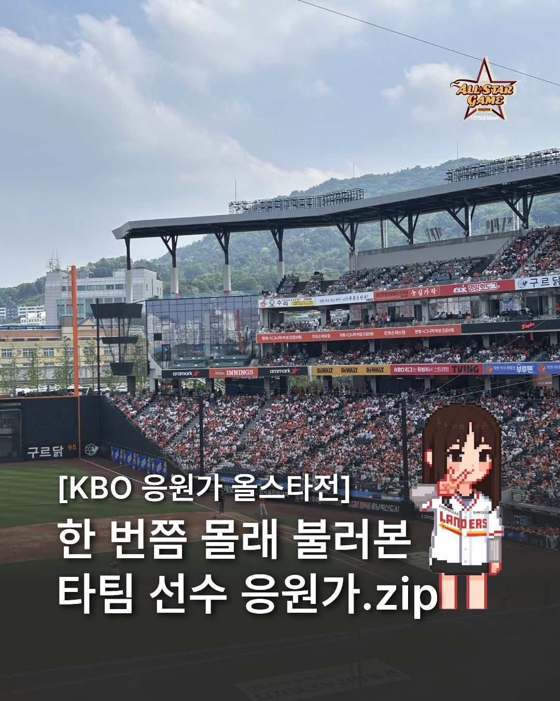

02 / FAN CULTUREKBO CHEER SONGS
MEET ALL-STAR WEEK.
Created an 11-slide Instagram carousel around rival-team cheer songs during KBO All-Star Week, using a shared fan experience to encourage engagement across team loyalties.
19,266 VIEWS · 493 SHARES · 34 REPOSTS